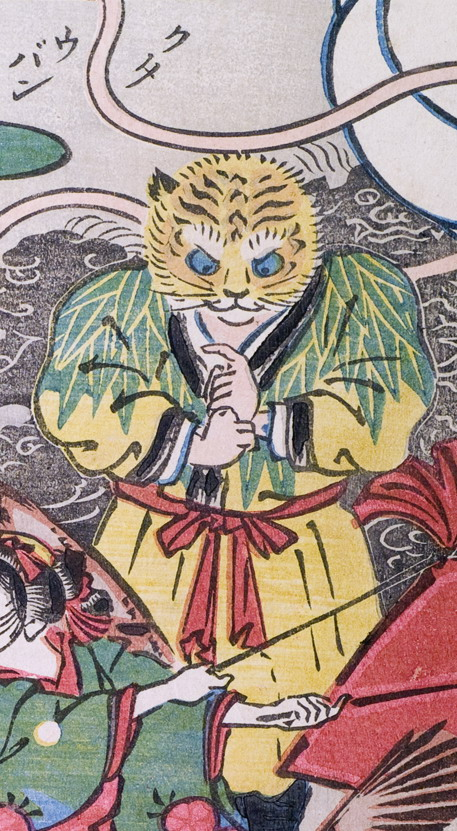

虎；トラ

頭部は虎で体は人間の化物。笹の絵柄が入った黄色い着物姿で立っている。手は印を結んでいる。
著作者：玉園／出典：親書誌：U426_nichibunken_0145：画本西遊記百鬼夜行ノ圖；エホンサイユウキヒャッキヤギョウノズ／日付：2009／資源識別子：U426_nichibunken_0145_0011_0000
Copyright (c)2010- International Research Center for Japanese Studies, Kyoto, Japan. All rights reserved.